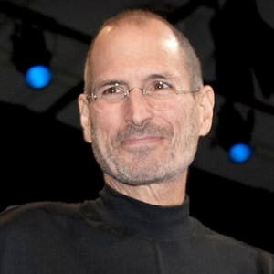

Steve Jobs Biography
(1955–2011)
Photo: David Paul Morris/Bloomberg via Getty Images
|
|
Steve Jobs Biography
|
Steve Jobs co-founded Apple Computers with Steve
Wozniak. Under Jobs' guidance, the company
pioneered a series of revolutionary technologies,
including the iPhone and iPad.
Steven Paul Jobs was an American inventor, designer and entrepreneur who was the co-founder, chief executive and chairman of Apple Computer. Apple's revolutionary products, which include the iPod, iPhone and iPad, are now seen as dictating the evolution of modern technology.
Born in 1955 to two University of Wisconsin graduate students who gave him up for adoption, Jobs was smart but directionless, dropping out of college and experimenting with different pursuits before co-founding Apple with Steve Wozniak in 1976. Jobs left the company in 1985, launching Pixar Animation Studios, then returned to Apple more than a decade later. Jobs died in 2011 following a long battle with pancreatic cancer.
Jobs was born to Joanne Schieble (later Joanne Simpson) and Abdulfattah "John" Jandali, two University of Wisconsin graduate students. The couple gave up their unnamed son for adoption. Jobs’ father, Jandali, was a Syrian political science professor. His mother, Schieble, worked as a speech therapist. Shortly after Jobs was placed for adoption, his biological parents married and had another child, Mona Simpson. It was not until Jobs was 27 that he was able to uncover information on his biological parents.
As an infant, Jobs was adopted by Clara and Paul Jobs and named Steven Paul Jobs. Clara worked as an accountant and Paul was a Coast Guard veteran and machinist.
Jobs was born on February 24, 1955, in San Francisco, California. He lived with his adoptive family in Mountain View, California, within the area that would later become known as Silicon Valley.
In 1976, when Jobs was just 21, he and Wozniak started Apple Computer in the Jobs’ family garage. They funded their entrepreneurial venture by Jobs selling his Volkswagen bus and Wozniak selling his beloved scientific calculator. Jobs and Wozniak are credited with revolutionizing the computer industry with Apple by democratizing the technology and making machines smaller, cheaper, intuitive and accessible to everyday consumers.
Wozniak conceived of a series of user-friendly personal computers, and — with Jobs in charge of marketing — Apple initially marketed the computers for $666.66 each. The Apple I earned the corporation around $774,000. Three years after the release of Apple's second model, the Apple II, the company's sales increased by 700 percent to $139 million.
In 1980, Apple Computer became a publicly-traded company, with a market value of $1.2 billion by the end of its very first day of trading. Jobs looked to marketing expert John Sculley of Pepsi-Cola to take over the role of CEO for Apple.
The next several products from Apple suffered significant design flaws, however, resulting in recalls and consumer disappointment. IBM suddenly surpassed Apple in sales, and Apple had to compete with an IBM/PC-dominated business world.
In 1984, Apple released the Macintosh, marketing the computer as a piece of a counterculture lifestyle: romantic, youthful, creative. But despite positive sales and performance superior to IBM's PCs, the Macintosh was still not IBM-compatible.
Sculley believed Jobs was hurting Apple, and the company's executives began to phase him out. Not actually having had an official title with the company he co-founded, Jobs was pushed into a more marginalized position and thus left Apple in 1985.